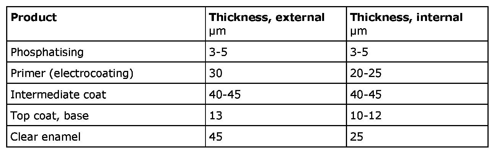

Surface Treatment
Surface Treatment
Apart from giving the car an attractive appearance, the main purpose of the paint is to protect the body and other sheet metal parts from corrosion. All Saab cars undergo an extremely thorough surface treatment process during manufacture. All products used in this process are meticulously tested to ensure that they meet Saab Automobile AB's high standards of paint finish and corrosion protection.
The products in the surface treatment process are applied in different thicknesses, specified in the table below.

The different products are applied during different stages of surface treatment. Refer to The surface treatment process.